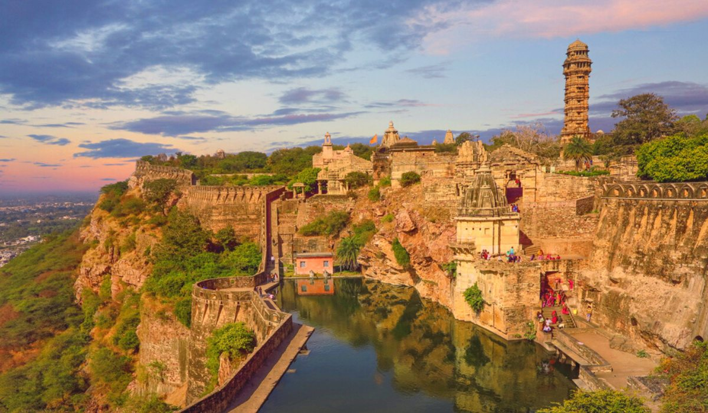
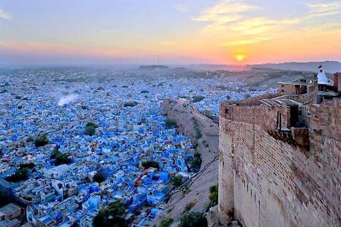

|
|
Home | About | Reviews | Articles | Contact |
| Rajasthan is a state in northern India. It is the largest Indian state by area and the seventh largest by population. It is on India's northwestern side, where it comprises most of the wide and inhospitable Thar Desert (also known as the Great Indian Desert) and shares a border with the Pakistani provinces of Punjab to the northwest and Sindh to the west, along the Sutlej-Indus River valley. It is bordered by five other Indian states: Punjab to the north; Haryana and Uttar Pradesh to the northeast; Madhya Pradesh to the southeast; and Gujarat to the southwest. Its major features include the ruins of the Indus Valley Civilisation at Kalibangan and Balathal, the Dilwara Temples, a Jain pilgrimage site at Rajasthan's only hill station, Mount Abu, in the ancient Aravalli mountain range and eastern Rajasthan, the Keoladeo National Park of Bharatpur, a World Heritage Site known for its bird life. Rajasthan is also home to three national tiger reserves, the Ranthambore National Park in Sawai Madhopur, Sariska Tiger Reserve in Alwar and the Mukundra Hills Tiger Reserve in Kota. |
 |
Rajasthan literally means "The Land of Kings" and is a portmanteau of Sanskrit "Rājā" (King) and Persian "St(h)ān" (Land) or Sanskrit "Sthāna" with the same meaning. The oldest reference to Rajasthan is found in a stone inscription dated back to 625 CE. The first printed mention of the name Rajasthan appears in the 1829 publication Annals and Antiquities of Rajasthan or the Central and Western Rajpoot States of India, while the earliest known record of Rajputana as a name for the region is in George Thomas's 1800 memoir Military Memories. John Keay, in his book India: A History, stated that Rajputana was coined by the British in 1829, John Briggs, translating Ferishta's history of early Islamic India, used the phrase "Rajpoot (Rajput) princes" rather than "Indian princes". Parts of what is now Rajasthan were partly part of the Vedic Civilisation and the Indus Valley Civilization. Kalibangan, in Hanumangarh district, was a major provincial capital of the Indus Valley Civilization. Another archaeological excavation at the Balathal site in Udaipur district shows a settlement contemporary with the Harrapan civilisation dating back to 3000–1500 BCE. |
|
Content: Culture & Tradition Best Places To Explore Live .Love .Eat Best Things To Do |

| The Ghoomar dance from Jodhpur and Kalbeliya dance of Jaisalmer have gained international recognition. Folk music is a vital part of Rajasthani culture. Bhopa, Chang, Teratali, Ghindar, Kachchigghori, Tejaji, parth dance etc. are the examples of the traditional Rajasthani culture. Folk songs are commonly ballads which relate heroic deeds and love stories; and religious or devotional songs known as bhajans and banis (often accompanied by musical instruments like dholak, sitar, sarangi etc.) are also sung.Kanhaiya Geet also sang in major areas of east rajasthani belt in the collectiong manner as a best source of entertainment in the rural areas. |  |

| 1. The Pink City - Jaipur | |
| Jaipur is the capital of the royal state of Rajasthan. Along with Delhi and Agra, Jaipur forms the Golden Triangle and hails as one of the most famous tourist circuits in the country.Rajputs ruled Jaipur for many centuries and developed as a planned city in the 17th century AD. With the old city surrounded by walls and gates decorated with drawings on the backdrop of a beautiful pink hue, Jaipur, the pink city, successfully retains its old-world charm.The city is also very well known for its local food, and the most famous dishes include the Ghewar, Pyaaz Kachori and Dal Baati Churma. The city also hosts the Jaipur Literary Festival, which is Asia's biggest festival of its kind. Jaipur is also home to all the modern amenities with some of the most exotic hotels and resorts in the world. The city boasts an international airport and is also very well connected by rail and road. This makes Jaipur the gateway to Rajasthan - the startin g point for places to visit in the interiors of the state. |  |
| 2. The land of Ajmer Sharif Dargah. | |
| Surrounded by Aravali ranges, the city of Ajmer is most famous for the Ajmer Sharif Dargah of saint Muin-ud-din Chishti. This makes Ajmer one of the most significant places of Islamic pilgrimage in the world. Ajmer has a unique charm that lies in the ethos and craftsmanship practised over centuries.Visit Ajmer to witness the exquisite Mughal architecture set in an aura of spirituality. The city is also a renowned religious spot for Jains because of Golden Jain Temple.Apart from Ajmer Sharif Dargah and the Jain Temple, there are some other tourist attractions in Ajmer as well. Adhai Din ka Jhopra, Ana Sagar Lake, Foy Sagar Lake, Ajmer Government Museum and Taragarh Fort are some of them. | |
| 3. Udaipur - The City Of Lakes | |
| Udaipur, also known as the City of Lakes, is one of the most visited tourist places in Rajasthan. Located around stunning water lakes and enveloped by the Aravalli Hills in all directions, Udaipur is known for its azure lakes, magnificent palaces, vibrant culture and delectable food. Along with being a must-visit destination, it is also one of the best places to experience luxury in India. Boating through the shimmering Lake Pichola is one of the most beautiful sights and highlights of every Udaipur trip. Also known as the "Venice of the East", Udaipur is inarguably one of the most romantic cities in India. Visit its larger than life havelis and monuments, stroll through the bustling street markets, ride through one of the seven lakes of the city or relax in one of the extraordinary hotels, and you will discover the charm of Udaipur. Lake Pichola, Jaisamand Lake, City Palace, Monsoon Palace, Jagmandir, Fateh Sagar Lake, Jagdish Tem ple and Saheliyon ki Baari are some of the popular tourist places in Udaipur. |  |
| 4. Chittorgarh - City of Pride and Honor. | |
| Located in South-Eastern Rajasthan, Chittorgarh is known for Chittorgarh Fort, the largest fort in India built on a hilltop, spreading over an area of around 700 acres. The capital of the erstwhile kingdom of Mewar, the magnificent fortress will always be remembered for the courageous self-sacrificing Jauhar performed by Rani Padmini to thwart the conquest of the fort by Alauddin Khilji.Chittorgarh stands at the helm of Chattari Rajput pride and is remembered in the pages of history for its glorious battles, especially the siege of Alauddin Khilji. Once known for its grandeur and opulence, today, Chittorgarh has left its tales of bravery and betrayal far behind to catch up to commercialization. Rana Kumbha Palace is the largest structure in Chittorgarh fort, a magnificent three-storied palace with gigantic pillars, maze-like underground tunnels and intricately designed architecture. The most famous attraction in Chittorgarh fort is the Padmini Palace, named after Queen Padmini herself. |  |
| 5. Jodhpur - The Blue City. | |
| Jodhpur is the second-largest city in Rajasthan and the former capital of the Marwar region. It is popularly called "the Blue City" as it looks completely blue from an aerial view because of its blue walls and houses. Jodhpur is primarily famous for its temples, lakes and snacks, with the magnificent Mehrangarh Fort being the main attraction. The magic of Jodhpur lies in the streets of the old city itself, which circles the mighty Mehrangarh. Hundreds of shops, guesthouses, eating joints, and vendors make it a bustling chirpy town, especially near the landmark clock tower and Sardar Market. The new and modern Jodhpur lies beyond Mehrangarh.Jodhpur is famous for its delectable food items, especially Pyaaj Kachori, Mirchi Bada and Mawa Kachori. In September, the city hosts the colourful Marwar Festival and Rajasthan International Folk Festival. Some traditional villages are located around Jodhpur, and a tour of these villages (called Bishnoi Village Safari) is one of the popular things to do here. |  |

| 1. Dal Baati Churma | |
| This is the state's classic signature dish. Baati is hard, unleavened bread cooked in the desert areas of Rajasthan. Baati is prized mainly for its long shelf life, plus it requires hardly any water for its preparation. It is always eaten with dal (lentil curry). The dal is made of lentils while churma is a coarsely ground wheat mixture crushed and cooked in ghee and jaggery or sugar. It is associated with the festivals of Makar Sankranti and Diwali in the Dhundhand region. It is also prepared on special occasions like marriage ceremonies and housewarming. | 
|
| 2. Laal Maans | |
| In this predominantly vegetarian state, the most famous non-vegetarian dish is laal maans. Laal maans literally means ‘red meat’ and the dish got its name because of its red color. Traditionally, laal maans used to be made with wild boar or deer. Today, it consists of marinated spicy mutton curry cooked on a low heat in a fiery sauce of red chillies, garlic paste, sliced onions and curds. A must-try for meat eaters. This dish typically is very hot and rich in garlic. The gravy may be thick or liquid and is eaten with chapatis made out of wheat or bajra. | |
| 3. Ker Sangri | |
| One of the most popular Rajasthani dishes, ker is a wild berry that is tangy and peppery while sangri is a type of long bean grown abundantly in the desert areas of Jaisalmer and Barmer. Sangri is a mainstay during drought, when little else is available as it is 53% protein. Legend has it that long ago there was a famine in Rajasthan and the villagers found these two vegetables when all other vegetation had withered away. The villagers took these vegetables home and due to the scarcity of water cooked them in vegetable oil with spices. They ate this wonderful concoction with their bajra rotis. Today they cook it with buttermilk or water. | |
| 4. Ghevar | |
| Ghevar is a Rajasthani cuisine disc-shaped sweet made from ghee, flour, and sugar syrup.A special sweet dessert from Jaipur that is essentially a disc made from flour, soaked in ghee, milk and topped with sliced almonds. This sweet dish has a crunchy texture and is made in a mould. There are varieties of Ghevar that can be prepared from a plain, mawa (condensed milk) and malai ghevar (cream).t is traditionally associated with the month of Shravan and the Teej and Raksha Bandhan festivals. | |
| 5. Kalakand | |
| Kalakand is one of the most popular Indian sweets, and with good reason. This milk cake is creamy, dreamy and completely addictive; I could eat a whole batch just to myself! If you are looking for an easy Sweet Recipe for Diwali, this is the recipe you need.To make kalakand traditionally, the milk is lightly curdled with a bit of alum or curd or citric acid and simmered until thickened. While the traditional method of making this dessert is rather long, I have found a great short cut: sweetened condensed milk! | |

| 1. Zip Lining | |
| One of the most sought after things to do in Rajasthan is Zip Lining, or Flying Fox as it is commonly known. Go zipping from one cliff or structure to another and on your way you get to enjoy exquisite views of forts. Zip lining in Rajasthan can be tried in Neemrana Fort and Mehrangarh Fort. While both offer splendid views, Neemrana is an ideal getaway near Delhi and Mehrangarh is very close to Udaipur. | |
| 2.Dune Bashing – Let The Adrenaline Rush Take Over | |
| An extremely popular sport in Thar Desert, dune bashing is a real pump of adventure. Driving an SUV in the endless desert is an exhilarating experience. If you don’t own a SUV, worry not! You can rent one from the neighborhood dealers and have the blast.Dune bashing means explore the sand dune in Desert. In India best sand dune found in Jaisalmer, Rajasthan. Life in we provides Dune bashing in Sam village near Jaisalmer. There are two popular way of desert safari- Indian style (on camet) & Dubai style (In SUV). In Indian Style safari, people explore desert (sand dunes) on the camel with expert guide and in Dubai Style, people using off road vehicle (SUV). Life In India Holiday provide both type of Desert Safari in Sam Village near by Jaistmer. | |
| 3. Elephants At Dera Amer – A Day Out With Elephants! | |
| Have you ever had a day out with Elephants? Well, this is the perfect opportunity to have one. You can try your hand at all sorts of activities related to elephants like giving them a shower or feeding them sugarcanes. You can even paint their trunks with organic paints so as not to harm your giant friends. It is one of the most visited tourist places near Jaipur. While enjoying your day at Dera Amer, you can gorge on authentic delicacies of Rajasthan at the spot too. If you have had enough for a day, you can also head out for a short trek on a nature trail in the nearby forest. | |
| 4. Camel Safari – One Of The Popular Things To Do | |
| A camel safari in Rajasthan is again one of the exclusive experiences you can have here. Exquisite views of the desert seem even more beautiful from camel’s back. The ship of desert lets you explore the ruins and beautiful structures from vantage point, unmatched by any. Best cities to enjoy camel safari in Rajasthan are Pushkar and Jaisalmer. There are several places in Rajasthan where you can go for Camel Safari, and the best ones include Jaisalmer, Bikaner, Pushkar, and Jodhpur. Each of these places offer a unique and memorable experience. | |
| 5. Music Of Kalbeliya Tribe – Match The Steps! | |
| To witness the hypnotizing folk dance performance of Kalbeliya Tribe is a treat. Enjoy the lovely dance performances by beautiful women of the tribe and I bet their belly dancing skills will completely blow your mind. Do not forget to witness this gorgeous folk dance performance when touring the “Land of Maharajas” with your family and friends. Make sure this is added to your Rajasthan things to do. | |